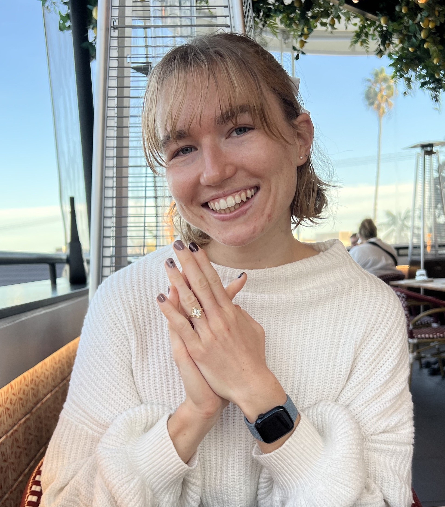

Kelsey Lawson
Manufacturing Engineer
New Product Introduction

Manufacturing Engineer
New Product Introduction

In 2021, I graduated from the University of California, Irvine with a degree in Materials Science and Engineering. Throughout my time in college, I added a Material Science-based specialization in Structural and Mechanical Design and a minor in Biomedical Engineering. I want to pursue the medical field because of my desire to improve traditional medical applications that enhance the livelihood of those around me through the contribution of my work. I love expressing my creativity in academic and hobby-based environments. A recent side project I got to do was design my graduation cap during my last quarter in school. As mentioned previously, I majored in Material Science and Engineering with an added Biomedical Engineering minor due to my interest in prosthetics and implants. I planned to combine both elements onto my hat in a way that molds them into myself as a new graduate. I also added the three commonly used materials for implants based on their crystal structures, each hitting the category of metal (Titanium), polymer (Polypropylene), or ceramic (Zirconia). I also programmed an Arduino Nano to pull this middle layer with the implants out from under the grad level towards these materials to connect the medical side with the materials.
Based on my contributions, I am currently working at Stryker as a Manufacturing Engineer to transfer new product to production. Previously, I worked at Penumbra as a Sustaining Manufacturing Engineer for multiple product lines. I aimed to work towards the effort make a positive impact in the world by helping those in need.


Below is an overview of the undergraduate projects and related assignments
accomplished during my time at the University of California, Irvine. I majored in
Material Science and Engineering specializing in Mechanical Design with a minor in
Biomedical Engineering. Unfortunately, the last two years of my program were affected
by the COVID-19 pandemic and projects shifted to an online only format.
Throughout my academic career, I strengthened my ability to think critically under
the pressure of having 10 weeks of instruction without compromising the effort of my work.
Because my course load in college exceeded the traditional 12 units, I honed my organizational
efforts in order to complete my assignments ahead of time so that I can review the level of detail is up
to par with expectations.
This strengthened the support I offered in team settings during projects because I was able to keep
my team members focused on the task. This allowed us to successfully complete all requirements in a manner that
allowed for additional revisions and check in's with TA's and professors. In the end, I am dedicated to finish
everything I have started while simueltanseuously never forgetting to push myself and my creativity beyond
expectations.
For my recent contributions performed as a Manufacturing Engineer, please click here.